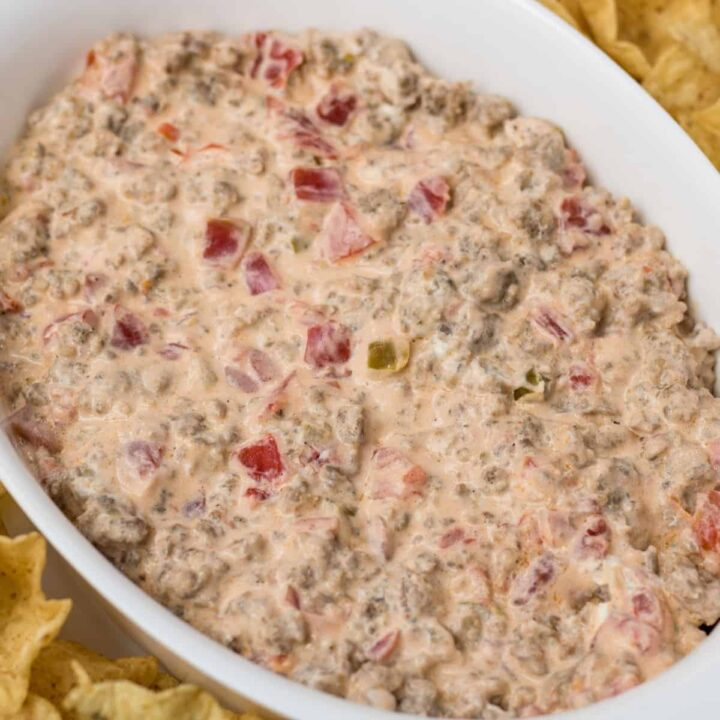

This is the best recipe for a gameday snack - most ingredients are already on hand!
- 1 lbs. of hot Italian sausage
- 2 packages of cream cheese
- 2 cans of Rotel
- Tortilla chips
- In a large pot, brown the Italian sausage. Try to get it cooked through, there's not much idle time for it to cook later.
- Once the sausage is cooked, add the cream cheese. Break it up with your spatula and mix it until the cream cheese is mostly liquified.
- Drain the water from the Rotel, and add both cans to the pot - stir well.
- Once the dip is thoroughly mixed together, turn the heat to low and serve with tortilla chips.
Go Back